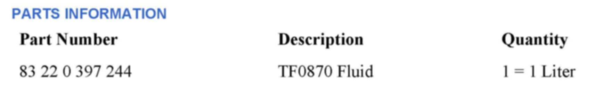
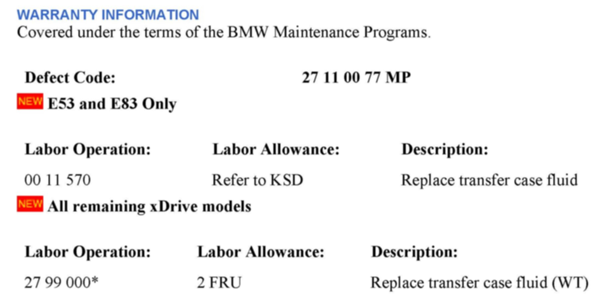

Drivetrain - Transfer Case Code 54C6, VTG Oil Wear
SI B 27 01 07Intermediate and Special Transmission
June 2010
Technical Service
This Service Information bulletin supersedes SI B27 01 07 dated March 2007.
[NEW] designates changes to this revision
SUBJECT
xDrive Vehicles: Transfer Case Fault Code 54C6 - VTG Oil Wear
MODEL
[NEW] E53 (X5) from 10/03 production, and:
[NEW] The following xDrive vehicles since the start of production (SOP)
E60, E61 (5 Series)
E70 (X5)
E71, E72 (X6)
E83 (X3)
E90, E91, and E92 (3 Series)
F01, F02 (7 Series including the ALPINA B7)
F07 (Gran Turismo)
F10 (5 Series)
SITUATION
After performing a short test (Vehicle Test) as part of the diagnostic procedure on the above vehicles, fault code 54C6 - VTG: Oil wear is found stored in the memory. This fault will not illuminate a warning lamp.
CAUSE
The transfer case fluid wear value limit has been exceeded.
CORRECTION
Replace the fluid in the xDrive transfer case.

PARTS INFORMATION

[NEW] WARRANTY INFORMATION